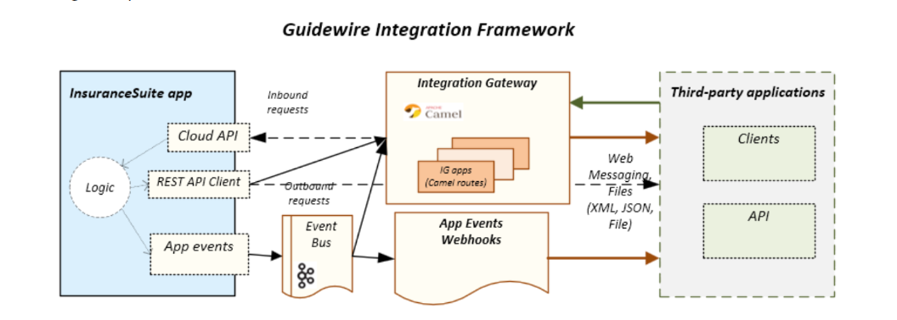

Replacing the outdated, manual P&C claims process with an autonomous safety net that protects a gig worker's earning capacity and pays out instantly.
Gig workers form the backbone of quick-commerce, yet they are the most financially vulnerable. During extreme conditions (heatwaves, floods, pollution), they face a tough decision: work in unsafe conditions OR lose their daily income.
Traditional insurance fails them. This leads to extreme income instability and severe safety risks.
RiskWire is an AI-powered, parametric micro-insurance product built natively on the Guidewire Cloud Platform (GWCP) designed for instant support.
No paperwork, no delays, no manual intervention. Automatically triggers payouts without manual claims when riders are forced offline.
Our primary focus is on hyper-local delivery partners (Platforms: Swiggy, Zomato). They are highly vulnerable to localized disruptions.
Traditional insurance cannot scale to the gig economy because of high monthly premiums and slow manual claims. We chose GWCP because it provides enterprise primitives:
Flexible subscription model (Basic, Standard, Pro). Premiums are adjusted using an AI-based Risk Multiplier. Higher risk zones result in a slightly higher premium, making it affordable and scalable.
Powered by an In-Context RAG Assistant (Gemini), Vani AI feeds policy Q&A directly to the user in their native language.
Referral system for mass adoption coupled with strong authentication & identity validation, and spam call detection.
We leverage Guidewire’s Jutro framework to build accessible, React-based interfaces tailored for two distinct users: the gig worker in high-motion environments, and the insurer monitoring macro-risks.

If our Python ML Oracle detects a catastrophic macro-drop in aggregator order volumes (e.g., >70% drop), it triggers the Dynamic Solvency Protocol inside Guidewire.
Standard GPS is mathematically compromised. RiskWire protects Guidewire ClaimCenter using a Multi-Layered Spatial ML & Hardware Verification Framework.
Location.isMock() and "Dead Metadata" traps (e.g., exact 0.0000 speeds).Core microservice endpoints hosted on our external Python FastAPI Oracle:
POST /api/v1/oracle/quote-multiplier
Payload: { "zone_id": "Z-401", "rider_id": "R-992", "tier": "PRO" }Runs Gradient Boosting model against 5-day weather forecast; returns dynamic price multiplier.
POST /api/v1/oracle/verify-claim
Payload: { "claim_id": "C-102", "gps_lat": 13.08, "is_mock": false }Isolation Forest ML model evaluates spatial-network data; returns confidence score.
GET /api/v1/oracle/market-health/chennaiHourly GWCP Cron Job checks aggregator drop >70% to trigger Solvency Protocol.
POST /api/v1/vani/ask
Payload: { "user_audio_blob": "...", "language": "ta-IN" }Gemini 1.5 Flash (RAG) processes localized audio query based on hard-coded policy rules.
Theme: Ideate & Know Your Delivery Worker
Completed: Finalized GWCP architecture, Jutro frontend strategy, Voice AI inclusion, Market Crash protocol, and the Multi-Layered Anti-Spoofing defense.
Theme: Protect Your Worker
Next Steps: Scaffold Jutro application. Configure APD and PolicyCenter for weekly terms. Build the Python FastAPI Oracle and link it via the Guidewire Integration Gateway.
Theme: Perfect For Your Worker
Upcoming: Implement ClaimCenter Autopilot logic. Refine the Voice-to-Voice UX. Record the end-to-end zero-touch claim demo demonstrating GWCP's power.